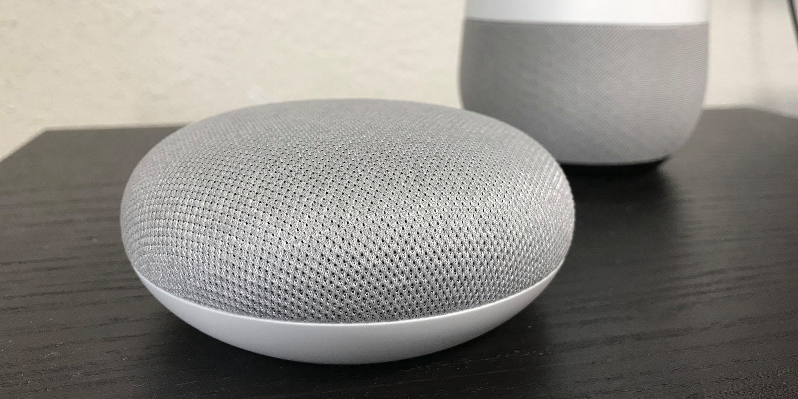
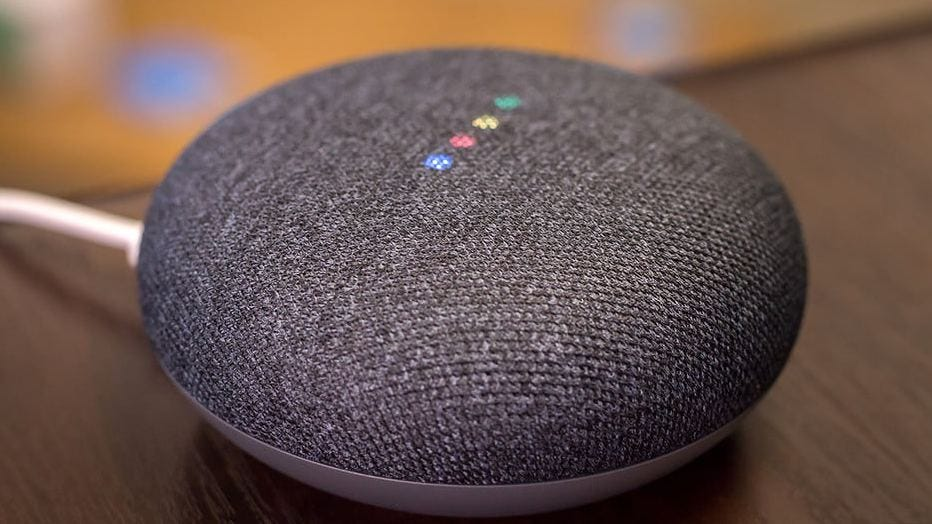
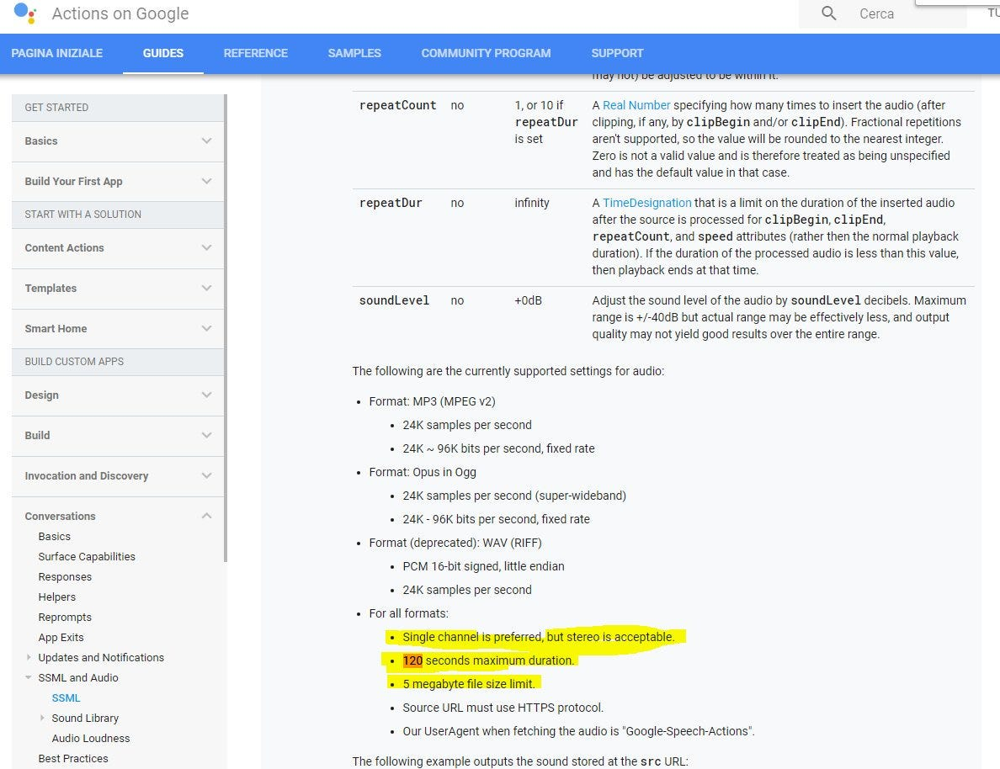
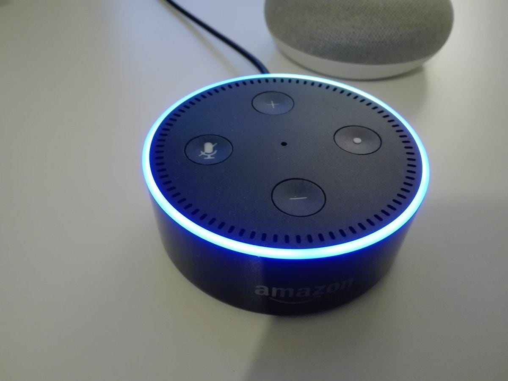

L’umorismo del sasso parlante di Google
Primi botta-risposta con Google Home Mini in lingua italiana

Posseggo da una settimana un Google Home Mini (che in casa chiamiamo confidenzialmente “il sasso parlante”), nella versione commercializzata in Italia, ovvero in lingua italiana.
Riporto qui qualche considerazione sulle prime prove di utilizzo, un poco deludenti ma al contempo anche sorprendentemente emozionanti, ammetto, anticipando una temporanea conclusione.
Update 15 Aprile: aggiunto paragrafo su impossibilità di “ascoltare” youtube.
Update 17 Aprile: aggiunta nota su “Media responses” con le actions.
Non so come aiutarti
La percentuale di volte in cui Google Home “non capisce” è davvero molto alta ed i messaggi di errore sono piuttosto prolissi, ecco una lista di frasi tipiche:
Scusami, non ho capito.
Non so come aiutarti, ma ogni giorno imparo qualcosa in più.
Mi dispiace, non so come esserti d’aiuto, ma sto cercando di imparare.
Mi dispiace, non so come aiutarti, ma il mio team mi insegna cose nuove ogni giorno.
Fateci caso: si tratta quasi sempre di frasi che durano non meno di due o tre secondi. Frasi troppo lunghe! E la cosa incomprensibile è che non vengono usati i quattro bellissimi led multicolore e multi-intensità di cui è dotato Google Home Mini:

Invece i 4 led sono usati (a parte il boot) solo e sempre con colore bianco e con una codifica che non è a me di chiara interpretazione, ma se non ho capito male: scorrimento lampeggiante significa “sto elaborando”, mentre 4 led accesi con massima luminosità vogliono dire “ti ascolto, parla”.
Ho perplessità però su cosa significhino i 4 led che si spengono (senza che venga emesso alcun output vocale tra l’altro); immagino vogliano dire: “non mi stai dicendo nulla”. Non chiaro.
Piccoli miglioramenti auspicati
Nel caso di un errore del tipo “non ho capito un bel niente” potrebbero essere visualizzati per esempio 4 led in colore rosso. Nel caso di “funzione non disponibile” i led potrebbero lampeggiare in colore giallo e così via.
Di certo l’ascolto di lunghi messaggi di “non capito” innescano in me un po’ di nervosismo quando, rendendomi conto del fallimento, devo ripetere o riformulare la domanda interrompendo l’output con:
Ok Google, …
Non ho capito
e poi ancora probabile catena di:
Ok Google, blablabla
Non ho capito…
In effetti il followup-mode di Alexa è un passo avanti:
Ora non ho ancora capito se è il mio dispositivo ad avere un difetto hardware con il microfono, ma rimane il fatto che il natural language understanding appare davvero scarso, perlomeno non sembrano implementate risposte a domande apparentemente semplici e molto prevedibili statisticamente.
E non mi pare sia un problema generale di speech recognition di Google Assistant, perché ho verificato che la omonima app su smartphone riconosce in modo eccellente quasi tutto il mio parlato (tra l’altro mi ha colpito il fatto che lo speech recognition viene effettuato localmente sul telefono).
Mi pare strano non sia stato previsto un banale test del sistema audio che potrebbe essere attivato con il semplice comando:
Ehi Google, mi senti bene?
Ok Google, prova microfono!
Uffa, vogliamo le robe che c’hanno gli anglofoni!
Un’ulteriore frustrazione è data dal fatto che non vengono comprese in lingua italiana richieste che ho visto essere soddisfatte con successo nella versione di lingua inglese.
Morale: dal punto di vista delle funzionalità, il livello di comprensione di Google Home in lingua Italiana è per il momento davvero basso. Ma sono sicuro che migliorerà progressivamente nei prossimi mesi.
Prosodia e poesia
Una cosa che mi ha colpito subito positivamente è il tono della voce sintetizzata di Google Home in versione italiana, che mi pare eccellente.
Seduzione di una poesia recitata ad arte!
La perfezione della prosodia si evidenzia per esempio nella richiesta di una poesia:
Ok Google, recita una poesia
“Alla Musa” di Ugo Foscolo
Pur tu copia versavi alma di canto…
In questo caso, io sono rimasto stupefatto dalla qualità della prosodia del testo! Ma… la voce narrante è un raffinato Text-To-Speech o quella di un attore umano?
Provo ancora:
Ok Google, dimmi una poesia
“Tanto gentile e tanto onesta pare” di Dante Alighieri
tanto gentile e tanto onesta pare la donna mia …
Ok Google, recita un'altra poesia
Incipit dei promessi sposi di Alessandro Manzoni:
quel ramo del ramo di como che …
Nei casi sopra, la recitazione è esemplare ed i casi sono due: o la recitazione è una registrazione di un attore umano (ma l’impronta vocale sembra proprio quella sintetica dell’Assistant), oppure la qualità del text to speech è davvero formidabile. Ora la mia curiosità è alta: come è stata realizzato un così sofisticato controllo della prosodia? Immagino che ci sia stato un lavoro di codifica ad hoc, ma come? Attraverso il linguaggio SSML? Attraverso il famigerato tacotron2?
Sono davvero confuso e mi ci vuole l’aiutino di Silvano Luciani e James Giangola, a cui chiederò di chiarirci il dilemma! :)
La controprova con un text to speech non elaborato? Ecco qui:
Ok Google, dimmi una poesia
“San Martino” di Giosué Carducci
La nebbia agli irti colli piovigginando sale, …
In questo caso il TTS è terribile. Non c’è pressoché nessun controllo di tono e stress. Nemmeno le pause. Una differenza che cambia tutta l’esperienza!
Giochini per bambini ed ilarità per tutti!
Ma ecco dove Google Assistant riesce a convincere, facendo ridere un po’ tutti in famiglia, specie le bimbe, per esempio con il gioco quiz davvero ben fatto per miscela di suoni, musichette e battute scherzose:
Ok Google, Ti senti fortunato?
Senz’altro mettono di buon umore semplici giochini, raccontini e barzellettario vario di buffo gusto umoristico:
Ok Google, sorprendimi
Ok Google, raccontaci una favola
Ok Google, cantami una canzone!
Ehi Google, lancia due dadi
Ehi Google tira una moneta
Ok Google, sfera magica
Ehi Google, conta da ... uno a.. un milione
Ok Google, sei buffo!
E ci sono sorpese di ironia e doppi sensi simpatici:
Ok Google, vado in bagno!
il bagno è sempre in fondo a destra. Ti aspetto qui!
Ok Google, come la va?
non posso lamentarmi!
Multi-turn, Contesto, Personalizzazione
L’esperienza che attualmente si può avere con Google Assistant in versione italiana è davvero poco “conversazionale”. Sono rarissimi i casi di multi-turn proposti dall’Assistant, in cui c’è una esperienza di dialogo che vada al di là del singola volley (una-domanda-una-risposta).
Ancora, la gestione del contesto è assai rara. Ecco però un esempio in cui c’è un poco di mantenimento del contesto: quando chiedo le informazioni del meteo per la giornata di oggi, mercoledì, con la richiesta:
Ok Google, che tempo fa oggi?
Oggi il tempo a Genova è …
e poi chiedo
Ok Google, e sabato?
Sabato a Genova non pioverà! …
Però manca totalmente una benché minima personalizzazione, che vada al di là delle quattro impostazioni che si possono fare in fase di configurazione via app (nome dell’utente, indirizzo di casa e del lavoro, e poco altro).
E’ vero, c’è una funzionalità di voice match (attivabile solo da app… ed al momento credo possibile per una singola persona in questa versione italiana…) che permette di identificare il propria impronta vocale e dargli un nome per cui dopo se io dico:
Ok Google, ciao!
lui risponde
Ciao, Giorgio!
ma se la stessa frase viene detta da un’altra persona in casa, lui risponde solo:
Ciao!
Ma Assistant sembra non imparare assolutamente nulla dall'interazione di un dialogo esplicito in cui l’utente fa delle affermazioni su di sé. Se non erro non viene capita nemmeno la frase:
Mi chiamo Giorgio Robino
Eppure basterebbe configurare una conversazione del tipo “conosciamoci” in cui l’Assistant possa imparare “qualcosa” su di noi (raccogliere qualche dato su di noi), per avere successivamente l’illusione di una conoscenza di noi stessi… anche solo riutilizzando i dati memorizzati. Quella che negli anni ’90 avremmo chiamato “profilazione”, potrebbe rendere più usabile il nostro assistente. No?
Radio , Musica , Audiolibri
La qualità audio di Google Home mini? HI-FI: potenza di suono ed equalizzazione eccellente!
La buona vecchia Radio FM
L’ascolto di una Radio FM è possibile attraverso la fonte tunein. Ecco l’elenco dellle stazioni disponibili: https://tunein.com/radio/local/ 👍🏽
Ok Google, metti RAI Radio 3
Ok, Radio RAI 3 da tunein: 🎶🎶🎶
Passare da una stazione radio ad un’altra con un comando vocale mi ha dato un’inattesa soddisfazione istantanea!
Peccato solo che che le uniche conversazioni possibili durante l’ascolto dello streaming audio siano la richiesta del nome della stazione radio. Nient’altro.
E la Radio Interattiva?
Manca un’assistenza all’ascolto di contenuti in streaming (o file registrati) attraverso un bot che fornisca su richiesta, informazioni sui contenuti. Durante l’ascolto di un programma radiofonico sarebbe stupendo potere chiedere informazioni (“metadati”) sul programma stesso, come ad esempio i nomi degli autori del programma, l’argomento del programma, informazioni sugli argomenti trattati, etc. etc. Personalmente sto lavorando in questa direzione, con il concept: Fairy Tales, a storytelling bot.
Musica Google-Maestro!
L’ascolto della musica è possibile attraverso un numero limitato di fonti alternative: al momento Google Play (solo a pagamento) oppure Spotify (che opportunamente configurato permette di di accedere alle free playlist: https://open.spotify.com/ ). Chi ha provato Spotify con account premium pare soddisfatto. Google Home è consapevole delle canzoni che suona:
Ok Google, che canzone è questa?
risponde con titolo e cantante e se si apre l’app Spotify sul telefono si può pilotare la musica di Home e si vedono gli eventuali lyrics disponibili. Anche qui i problemi sono nel far comprendere il comando:
Ok Google, suona "le più popolari" di Lucio Battisti
(sono i brani che Spotify mette in evidenza per ogni artista) ma Google Home non capisce, se gli si chiede però solo:
Ok Google, suona "Si, viaggiare"
allora mette proprio la canzone scelta. Chiedendo “suona l’ultimo di Lucio Battisti” reagisce in maniera diversa, mettendo a volte un album a volte un altro, senza seguire un ordine logico (non cronologico di ultima pubblicazione, non di ultimo album suonato).
Audio Streaming Queue — Nice to have feature
Una cosa che mi piacerebbe è che l’Assistant potesse gestire una coda delle sorgenti di streaming, per esempio mi piacerebbe ascoltare una playlist di musica jazz su Spotify, poi chiedere l’ascolto di Radio 24, poi ancora delle news e quindi chiedere di tornare alla musica (la playlist appena ascoltata).
Al momento tutto questo non è solo fantasia.
Nessun contenuto audio da Youtube?
Una nota di perplessità anche sul fatto che non è disponibile lo streaming audio di contenuti già disponibili su Youtube! In verità c’è la possibilità di comandare la visualizzazione di video youtube attraverso Chromecast.
Ma non è quello che vorrei! Mi piacerebbe invece poter ascoltare, ripeto: ascoltare, non vedere su uno schermo, tutti i contenuti di youtube attraverso i dispositivi Google Home.
Vorrei ASCOLTARE su Google Home tutti i video Youtube!
Per Google sarebbe davvero un enorme vantaggio competitivo, perché su youtube ci sono contenuti gratuiti di ogni tipo, già validati e controllati.
Prendiamo ad esempio me stesso, sono anche musicista ed ho pubblicato su youtube la mia stessa musica su youtube.
Sarebbe fantastico se potessi dire invocare lo streaming di una traccia del mio album “Wanderer” ( edito da SOLYARIS MUSIC, ovvero Giorgio Robino, il sottoscritto) e pubblicata su youtube anni fa!
Anzi mi piacerebbe ascoltare su Google Home qualsiasi contenuto di youtube! Ma qual’è il problema per cui Google non ha abilitato questa connessione tra Youtube e Google Home? La conversione dei formati video in audio? Non credo. Forse il motivo è quello di favorire/rispettare accordi commerciali con Spotify ed altre “major” o spingere ad usare Google Play a pagamento?
E lo streaming audio nelle Actions?
Attualmente non è possibile realizzare actions, ovvero applicazioni terze parti, che fanno streaming audio. La funzionalità invece è possibile su Amazon Alexa.
Per la precisione è possibile riprodurre “spezzoni” audio via SSML, ma fino ad un massimo di 120 secondi.

Ma va detto che l’implementazione SSML di Google permette funzionalità innovative come la riproduzione “in parallelo” di testo e soundtrack!
Si veda il bell’articolo di Silvano Luciani: More SSML for Actions on Google!
E’ possibile la gestione dei podcasts, anche se in modo a mio avviso un poco rigido, qui descritto: https://developers.google.com/actions/content-actions/podcasts
Da due mesi a questa parte, Action on Google permette infine di effettuare il play di una traccia audio (file, no streaming) attraverso le Media Responses API.
Come sviluppatore, devo dire però che la gestione semplice ed intuitiva dell’ Alexa Audio Player, di file e streaming audio, mi è parsa molto più easy.
Audio libri
Ahimè. Non pervenuti. Non mi pare sia ora possibile ascoltare degli audio libri. Per certo so che Google Home in lingua inglese permette di ascoltare degli audio-libri. Vedi: https://www.youtube.com/watch?v=eCyucYW2bDQ
Google Play ha attualmente a catalogo degli audio-libri anche in lingua italiana:
Il fatto è che pare non esserci comunque la possibilità di ascolto di audio libri con Google Home in versione Italiana.
Ma dove sono le app (“actions”) italiane?
Le applicazioni terze parti (ovvero le actions realizzate da sviluppatori / aziende esterne a Google), in lingua italiana, si possono contare sulle dita di una mano. Eccole: https://assistant.google.com/explore.
Il fatto che al momento siano così poche non mi sorprende. Il lancio commerciale di Google Home Italia è di poche settimane fa e chi in Italia avrebbe potuto sviluppare e rendere disponibile subito applicazioni vocali interessanti … non si è (ancora) mosso.
La mancanza di una “discoverability” conversazionale è però ancora un elemento di debolezza di Google Assistant. Per esempio io non vorrei avere scoperto che esiste un’applicazione del Corriere Della Sera perché sono andato via web alla pagina ed ho successivamente provato il comando:
Ok Google, Chiedi a Corriere della Sera notizie su Milano
La user experience che invece avrei voluto sarebbe stata quella di arrivare alla action parlando semplicemente con l’Assistant … ma invece se chiedo:
Ok Google, Cosa dicono le notizie?
Vengo rediretto allo streaming audio del fornitore di news nelle impostazioni predefinite via app mobile (per esempio quelle del Corriere Della Sera).
Le news! Ma quanti bugs!
Proviamo con una richiesta scontata (oggi, domenica 15 Aprile alle 9 del mattino):
Ok Google, le ultime notizie!
Vediamo quali sono le ultime notizie. Riprendo a riprodurre da Corriere della Sera, ieri alle 7 e 12 del mattino.
Qui il metabot passa il controllo alla action del Corriere della Sera che inizia con la lettura delle notizie:
Ecco l’editoriale del Corriere della Sera di Sabato 14 Aprile, …
Il malfunzionamento fastidioso è che le “ultime notizie” sono quelle di ieri! Mi aspetterei che un fornitore di news debba fornire informazioni almeno aggiornate almeno quotidianamente! Ovviamente l’aspettativa ottimale è che le informazioni siano fornite in tempo reale.
Una nota positiva sul servizio del Corriere Della Sera però la vorrei spendere:
alcuni articoli (immagino in forma originale scritta) vengono letti da una voce sintetica con buona qualità della prosodia! Anche qui mi chiedo se si tratti davvero di un Text-To-Speech (la voce sembra generata con un sistema con sintesi concatenativa, dato che si riconoscono inflessioni dialettali italiane “umane”), il risultato è comunque buono.

Il servizio di flash briefing di Amazon Alexa, testato con un Echo Dot, funziona bene invece. E’ questo il modello da imitare.
Conclusioni temporanee
Il giudizio dell’esperienza, a parte tutte le limitazioni ed i bug, è comunque buono per l’emozione positiva della “relazione” che il metabot instaura con noi. Non importa se una volta su tre, al momento, l’Assistant non c’azzecca.
L’importante è che mette tutta la famiglia di buon umore. Ora diamoci da fare noi, sviluppatori e sviluppatrici, a realizzare applicazioni vocali che servano e ci migliorino!
P.S. prossimamente su questi “schermi”, alcune mie considerazioni sui tool di sviluppo Google Actions SDK e confronto con gli Alexa ASK SDK. Stay tuned!
Ringrazio Elisabetta Schiatti e Giuditta Del Buono per lo scambio di impressioni e prove di interazione! 💐🎶💐🎶
Qualche informazione
Sito ufficiale Google Home.
Data di lancio di Google Assistant in lingua Italiana: 1 Novembre 2017.
Data commercializzazione di Google Home in Italia: 23 Marzo2017.
Elenco delle app (actions): Che cosa può fare il tuo assistente.
Google Home Help Forum: productforums.google.com
Centro di assistenza di Google Home: support.google.com/googlehome
Pagina Facebook: Google Home Italia
Gruppo Facebook: Google Home Mini
Articoli collegati:
Originally published on Medium.